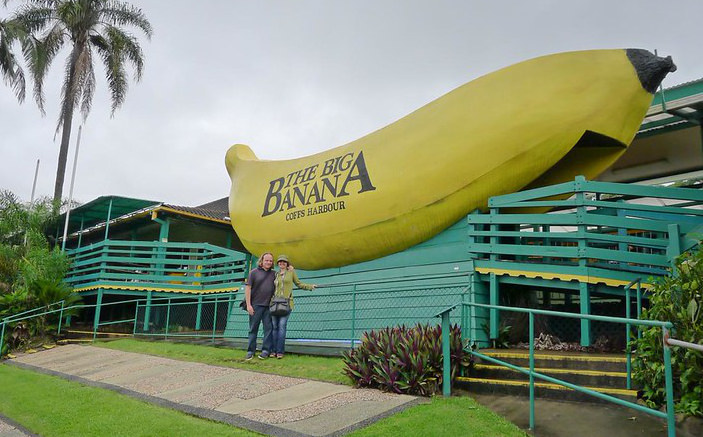
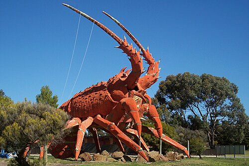
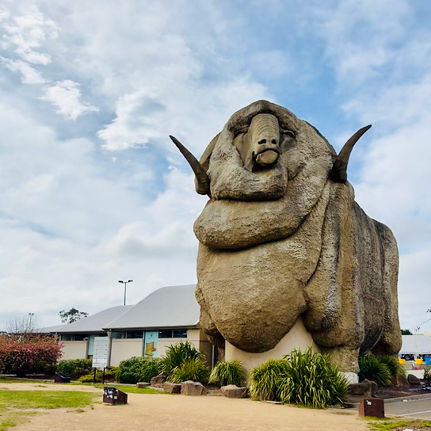
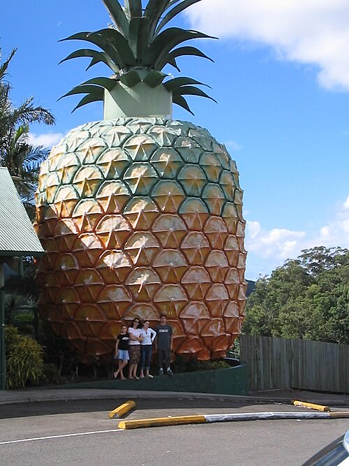
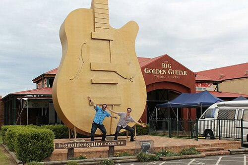
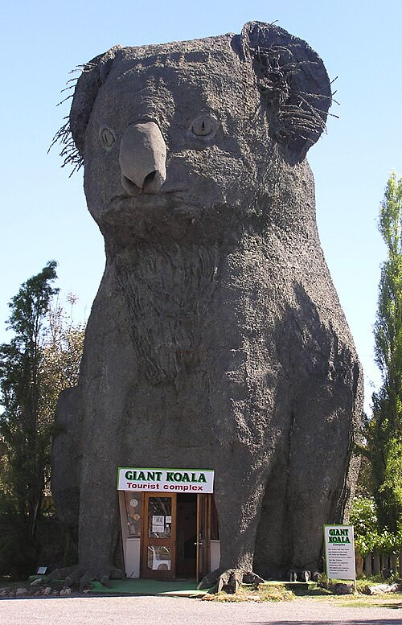

This is a map of the ones we can actually prove.
Fibreglass fruit on the highway. A ram the size of a house. A 250-metre earthworm you could walk through, until termites got it. The Big Things are the country's most democratic monuments: no committee, no marble, just a town deciding it should be known for something and building it out of chicken wire and render.
There is no official register. So this project assembled one from open data, and it tells you where it is guessing.






Giant, roadside, and slightly absurd on purpose.
The tradition starts with the Big Scotsman in Adelaide in 1963 and the Big Banana at Coffs Harbour a year later, and runs through six decades of towns advertising themselves at scale: a prawn, a merino, a mango, a bogan. Emerging at the same time as America's roadside giants, but with a different accent: where the United States built to sell, Australia built substantially to amuse itself.
The joke is the point. That is why the country has so many.
They are also fragile. These things are render over frame, exposed to weather, dependent on a business that may not outlast them. This dataset records 26 that have been demolished or removed, and keeps them on the map rather than quietly deleting them, because the ghosts are half the story.
You will see "more than 1,000" everywhere. It comes from Amy Clarke's census, published in “Making a Mark: Displays of Regional and National Identity in the Big Things of Australia and Canada” (Journal of Australian Studies 47(2), 2023; online November 2022), which counted 1,075 in Australia.
Two things worth knowing. The title mentions Canada because the same paper counts 1,250 there. Australia is not even the world leader at its own signature obsession. And the figure is a census, not a published list: nobody hands you the 1,075 rows. Which is exactly why this map shows 476 and says so on the front.
Every pin tells you how precisely it is placed, because most sources give a town, not a point.
This is the central problem of mapping Big Things. Wikipedia's tables name the town ("Robertson", "Ballina"), not the sculpture's position. A map that silently drops a few hundred town centroids onto the continent looks authoritative and is lying to you about where the Big Potato is.
So instead, each record carries a precision tier, and the map shows it in plain words on the card:
| How the pin was placed | Count |
|---|---|
| The sculpture has its own Wikipedia article, with coordinates | 20 |
| A Wikivoyage travel marker for this name, in this state | 27 |
| Matched to an OpenStreetMap feature near the right town | 78 |
| Researched individually against councils, operators and OSM | 183 |
| A coordinate written inline in the source table | 6 |
| The town’s centre, not the sculpture | 162 |
| Total | 476 |
314 of 476 (66%) sit on the sculpture itself. The rest sit at their town's centre, drawn with a dashed outline, labelled as such, and hideable with one switch. The map would look more impressive if it pretended otherwise. It would also be worse.
Open data is not the same as correct data. 22 corrections, each with a reason and a source.
Was pinned on the Nullarbor Plain, ~1,200 km from where it stands. The Location cell reads 'Forrest Highway, just north of Bunbury'; the place geocoder stripped the road type and matched Forrest, Western Australia, a real locality near the South Australian border. Fergus stands beside the Forrest Hi…
Wikipedia files the Big Triceratops in its New South Wales table and spells the town 'Ballendean'. Ballandean is in Queensland, in the Granite Belt near Stanthorpe; the article's own neighbouring rows (Big Apple, Thulimbah) are Queensland Granite Belt entries. Corrected state and spelling.
Wikipedia's Location cell reads 'Rosetown'. Larry the Lobster stands at Kingston SE on the Princes Highway; the district council's own page for the sculpture gives that location. Build year (1979) and 17 m height are confirmed by the same source.
The Location cell reads 'Anmatjere', a region rather than a settlement, which geocoded ~100 km north of the sculpture. The row's own notes place it at the Aileron Roadhouse on the Stuart Highway; OpenStreetMap maps the sculpture there.
Location cell reads 'Anmatjere', a region, which geocoded ~100 km north of the sculpture. The row's notes say Mark Egan added this family group to accompany his Anmatjere Man, which stands at the Aileron Roadhouse.
Wikipedia leaves the Built cell empty. The Big Oyster was opened on 30 March 1990 by NSW Premier Nick Greiner, per the NSW Government's attraction page and contemporaneous Manning River Times reporting.
Every one is recorded in data/overrides.json and surfaced on the affected card in the
map, so you can see what was changed and disagree with it.
Queensland and New South Wales dominate. Fauna beats fruit, comfortably.
The oldest here is Big Mouth at St Kilda, 1912. The newest is The Big Beer Can at Newcastle NSW, 2026. The largest along any axis is The Giant Worm at Bass at 250 m, and the tallest, measured as a height by its own source, is The Big Rig at Roma at 30 m.
Five openly-licensed sources, cited per row.
The spine of the dataset: names, towns, years, dimensions and notes, state by state.
CC BY-SA 4.0Surveyed marker coordinates, travel-guide voice, and entries Wikipedia omits.
CC BY-SA 4.0An independent coordinate cross-check, and the basemap tiles once you zoom in on the map.
ODbL 1.0The photographs, each under its own free licence and credited to its photographer.
various free licencesCommunity catalogues that enumerate far more than the wikis do. Facts only (a name, a place, a coordinate), cited per row.
facts only, cited300 photographs come from Wikimedia Commons, each under its own free licence and each credited to its photographer on the card. That is a licence condition for the CC BY and CC BY-SA files, which are most of them. For several versions of this app it wasn't being met, which was a breach rather than an oversight.
The photographs are not covered by this project's licence. Each stays under the
licence its author chose. The full list is in docs/IMAGE-CREDITS.md.
It is yours. CC BY-SA 4.0, matching the wikis it came from.
$ bigthings prawn
$ bigthings --state QLD --category seafood
$ bigthings --near -33.87,151.21 --within 300 --sort distance
$ bigthings --gone --format csv > lost-big-things.csv
$ bigthings --statsThe map and the command line share one query engine, and a test diffs their output for the same inputs so they cannot drift apart. The whole thing is zero-dependency Node: the bundle rebuilds from cached sources with no network, and 300 photographs, the fonts and Leaflet itself all ship from this domain rather than someone else's.
The same facts the rest of this page makes the case for, asked straight.
A 2023 academic census counted 1,075 big things in Australia, but that figure comes from a census, not a published list: nobody has ever named all of them in one place.
This map shows 476 of the claimed 1,075. 314 (66%) are placed at the sculpture itself; the rest sit at their town's centre because that is all the sources give.
The oldest is Big Mouth at St Kilda, built in 1912.
The newest is The Big Beer Can at Newcastle NSW, built in 2026.
The largest along any single axis is The Giant Worm at Bass, at 250 m.
The tallest, measured as a height by its own source, is The Big Rig at Roma, at 30 m.
26 of the 476 mapped here are recorded as demolished or removed, and are kept on the map rather than deleted.
No. There is no official register. This dataset is assembled from Wikipedia, Wikivoyage, OpenStreetMap and two independent community catalogues, cross-checked against each other, with every correction recorded and cited.